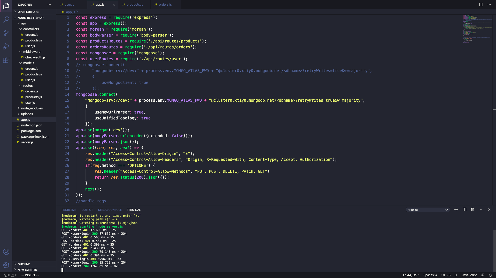
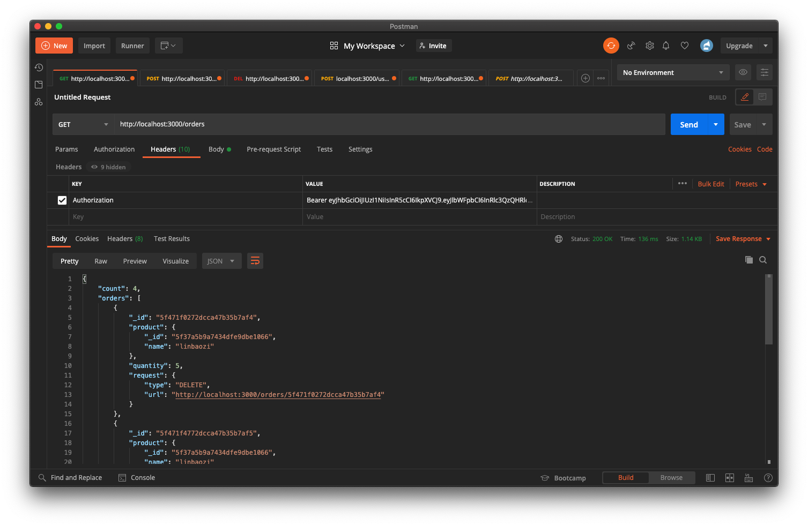

Intro
I'm now a graudate student studying Information Systems and Computer Software Engineering at Northeastern University.
I have some experience in both front-end and back-end development, and usually I'll start my day with some LeetCode questions
to enrich my knowledge of algorithms and data structures.
Before attending the graudate school at Northeastern, I was working as a software engineer intern at an IT and education company in Shanghai, China.
I will graduate from Northeastern University in May 2021, so now I'm seeking software engineer internship
and also open to full time opportunities to enter the IT industry again.
Bookcase Full Stack Web App
A template web application for libraries to manage their books.
Bookcase NodeJS was implemented with Node.JS(Express.JS) for the back end and React.JS for the front end and MongoDB for the database.
GraphQL was used to query information stored in MongoDB in this project.
Github Repo & More
Todo Full Stack Web App
A web application for users to take notes and create their todo lists.
Todo web application was implemented with Java and Spring Boot for the back end and React.JS for the front end
and H2 for the database. Basic Auth and JSON Web Token(JWT) was used to implement user login functionality.
Github Repo & More
E-Commerce Web Server


A template server that can be used as the back end of e-commerce web application.
E-Commerce NodeJS web server was implemented with Node.JS(Express.JS).
I used MongoDB as the database of this web server
and used JSON Web Token(JWT) and BCrypt to implement login and token verification functionalities.
Github Repo & more
BlackBoard Web Server
A template server that clones the student and course management systems used in high schools.
BlackBoard and its REST APIs were built with Java and Spring Boot.
Some AWS technologies were also used to implemented this server,
for example, AWS DynamoDB and AWS Lambda.
This project was the final project of course Cloud Computing and was deployed on AWS Elastic Beanstalk.
Github repo & more
Bookcase Web Server
A template server that can be used as the back end of book management systems in libraries.
Bookcase web server was implemented with Java and Spring Boot.
I used MongoDB as the database of this web server
and Redis to cache the data in the database to
improve the performance of fetching data.
Github repo & more
Blog Django
A full stack web application that can be used to post and manage blog articles.
Blog Django was built with Pyhton and Django for the back end, and HTML for the front end,
and the database used in this project was SQLite.
Github repo & more
Meme Generator
A React web application that can generate memes with random pictures.
Meme Generator was implemented with HTML, CSS and React.JS.
github repo & more
Car Selling Application
A desktop application that clones the car searching and management systems used by clients and dealers.
Car Selling Application was the final project of course Application Engineering
and was built with Java and its embedded UI library, Swing.
The whole system was divided into client side and dealer side,
I was a member of the UI team and worked with Swing to build the UI of the client side.
github repo & more
Skills
I'm glad that I live in an era when technologies are updating and iterating very fast
so that I can keep learning new things to improve my ability of software development.
Programming Languages
Java, C/C++, JavaScript, Python
Back End
Spring Boot, Node.JS, Express.JS, Django, Apache Tomcat
Front End
React.JS, HTML, CSS, Bootstrap
Database
AWS DynamoDB, MySQL, MongoDB, MongoDB Atlas, PostgreSQL, Redis, SQLite, H2
Cloud Computing
AWS Elastic Beanstalk, AWS EC2, AWS Lambda, AWS Step Functions
Tools
Docker, Maven, Git, Pandas, JSON, GraphQL
Contact
Feel free to contact me via email and also check out my social networks!